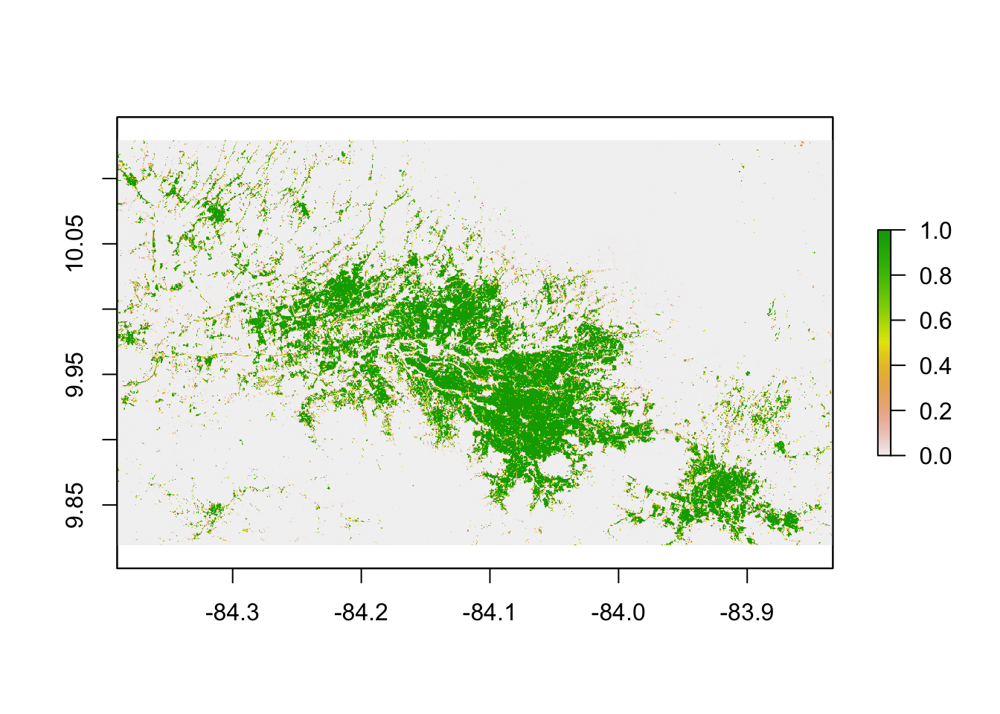

## Coordinate system does not match
## Resolution does not match
## Extent does not matchRaster Pre-Processing
Overview
This r markdown script pre-processes raster data used in the Hotspot Stoplight Project for visualization and cluster analysis. The datasets used in this project are as follows:
LAND COVER CHANGE PROBABILITY - Clark Labs
BIODIVERSITY INTACTNESS INDEX - Impact Observatory
CLIMATE RISK INDEX - Hotspot Stoplight Team: Nissim Lebovits
GRIDDED 2020 POPULATION - Global Human Settlements Layer
URBAN LAND COVER PROBABILITY - Hotspot Stoplight Team: Oliver Atwood, using classified data from Tristan Grupp
Each of these raster datasets are loaded into R and their Coordinate Systems, Resolution, and Extent are standardized. NA values are then removed and each dataset is standardized.
Four of these standardized datasets are then combined to produce two ‘Interaction Rasters’, using the following formulas:
Bio_x_Risk = LCC_Probability * BII
Bio_x_Risk emphasizes areas of high land cover change probability and high biodiversity intactness.
Anthro_x_Risk = Climate_Hazards * pop2020
Anthro_x_Risk emphasizes areas of high climate hazard probability and high human population.
Urban Land Cover Probability is a dataset generated through a random forest model trained on a range of physiographic factors to predict the likelihood of a given cell of a land cover raster to be urban in 2033.Bio_x_Risk and Anthro_x_Risk were both normalized and Bio_x_Risk, Anthro_x_Risk, and Urban Land Cover Probability were exported for clustering analysis.
These three datasets were then added together and the resultant raster dataset was normalized to produce a ‘Stoplight for Urban Development’.
Setting Parameters
Loading Datasets
Check Raster Coordinate Systems, Resolutions, and Extents
Unify Raster Coordinate Systems, Resolutions, and Extents
Plot Rasters for Visual Inspection


Double-Check Raster Coordinate Systems, Resolutions, and Extents
## Coordinate system matches
## Resolution matches
## Extent matchesRemove all NA values from rasters
Normalize all rasters
## Min value: 0 Max value: 1000
## Min value: 0 Max value: 0.9647594
## Min value: 0.001399566 Max value: 0.9714958
## Min value: 0 Max value: 579.4982
## Min value: -1.582723e-14 Max value: 1Generate Interaction Rasters
## Min value: 0 Max value: 0.9497479
## Min value: 0 Max value: 0.842676
## Min value: 0 Max value: 1Overlay Rasters to Produce ‘Stoplight For Urban Development’
## Min value: -0.9994601 Max value: 0.9963884Plots
Hotspot Stoplight Raster